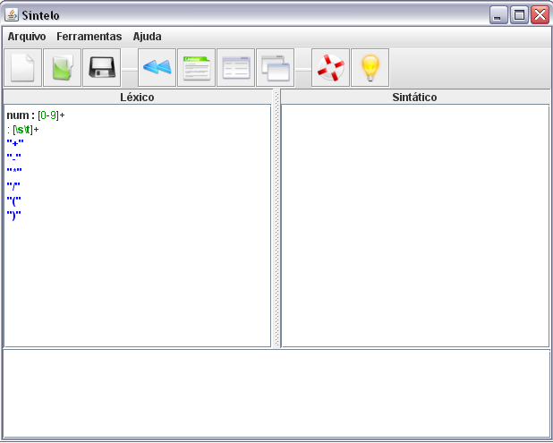
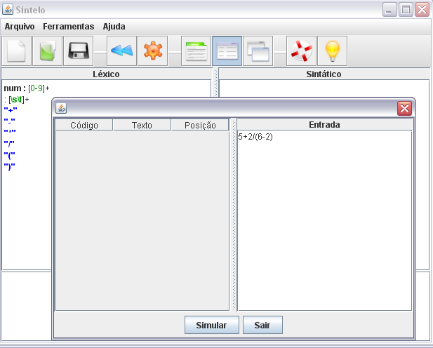
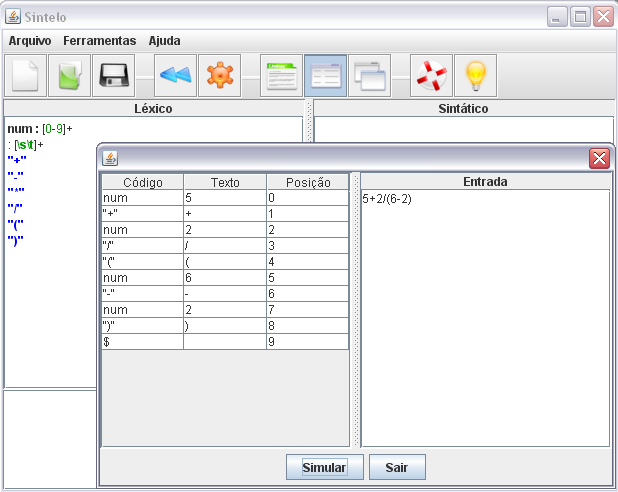

Voltar Índice
Voltar Índice
SIMULAÇÃO DA ANÁLISE LÉXICA
Na simulações do analisador léxico o usuário deverá fazer as especificações léxicas, conforme figura:

Após selecionar a opção de fazer a simulação léxica o usuário deverá declarar uma entrada de teste.

Será visualizada a seqüência de tokens reconhecidos, na coluna “Código” e mostrado o tipo do token, na coluna “Texto” o token declarado e na coluna “Posição” indica a posição do token.

A simulação na análise léxica não demonstrará o passo a passo do reconhecimento dos tokens, somente o resultado final.